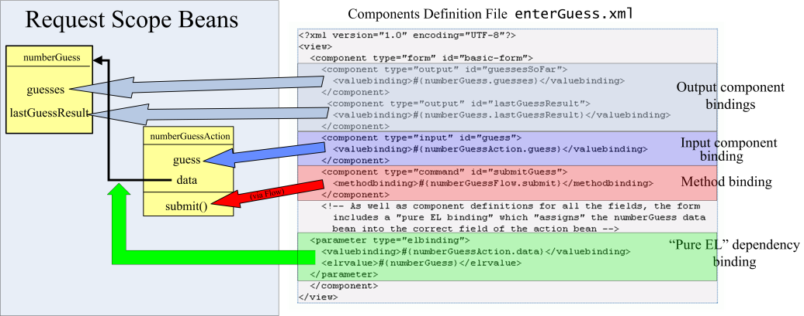

{kind=link}
{kind=link}
{kind=link}
{kind=link}
{kind=link}
Request scope programming and pure EL bindings#
The key change between the SWF (and in general, every previous) framework and RSF can be seen in the components file which backs the main phase of the number guessing application. This components file corresponds to the view with ID enterGuess, and is stored at src/webapp/WEB-INF/producers/enterGuess.xml in the RSFNumberGuess webapp structure:
<?xml version="1.0" encoding="UTF-8"?>
<view>
<component type="form" id="basic-form">
<component type="output" id="guessesSoFar">
<valuebinding>#{numberGuess.guesses}</valuebinding>
</component>
<component type="output" id="lastGuessResult">
<valuebinding>#{numberGuess.lastGuessResult}</valuebinding>
</component>
<component type="input" id="guess">
<valuebinding>#{numberGuessAction.guess}</valuebinding>
</component>
<component type="command" id="submitGuess">
<methodbinding>#{numberGuessFlow.submit}</methodbinding>
</component>
<!-- As well as component definitions for all the fields, the form
includes a "pure EL binding" which "assigns" the numberGuess data
bean into the correct field of the action bean -->
<parameter type="elbinding">
<valuebinding>#{numberGuessAction.data}</valuebinding>
<elrvalue>#{numberGuess}</elrvalue>
</parameter>
</component>
</view>
The earlier definitions are straightforward component peers with the input and output fields in the view. However, the final object in the view tree is a componentless or pure EL binding whose only purpose is to specify, at request time, an association between two request scope beans that the view is manipulating. In this case, since the bean identities are not changing per request, the value of this ability is not fully realised, but once we start manipulating fully-fledged domain models (as emitted from ORM solutions like Hibernate) this will become much more key. Other frameworks feature fragile (e.g. session or other inappropriately largely-scoped mappings between beans and their handlers, as in JSF - see examples in the "Java Server Faces" book) or awkward (e.g. Java 1.5 annotations and Aspect-Oriented Programming, as in the forthcoming Spring 2 framework) solutions to this problem which in RSF allows, in the original Spring tradition, beans to remain aware of just what they should be aware of, staying within the request context.
book) or awkward (e.g. Java 1.5 annotations and Aspect-Oriented Programming, as in the forthcoming Spring 2 framework) solutions to this problem which in RSF allows, in the original Spring tradition, beans to remain aware of just what they should be aware of, staying within the request context.
The following diagram shows the relationships between the components and bindings defined in this file, and their mappings onto elements of the request bean model, which is drawn in a form of simple UML. Notice the key ability defined by the green arrow, to encode request-scope dependencies within the component tree - these dependencies are stored along with all the other bindings as part of the client form, and correctly wired together in the new request scope once the submission is received. It's also worth remembering that this component tree could also have been generated via pure Java, for example using calls like UIOutput.make(parent, "guessesSoFar", "#{numberGuess.guesses}"). Take a look at MainProducer.java from the HelloWorld app for an example of this style.
|  |
This diagram illustrates each of the categories of entries that can appear in a component tree
- simple output components (in light blue) for presenting model data to the user
- an input component (dark blue) for accepting input
- a method binding (red) for invoking server-side logic, after all input components are submitted
- a pure EL binding (green) for binding together beans that are referred to by input components and method bindings.
Errors and messages#
RSF allows a POST cycle to communicate error and information messages to the user, which are targetted to arrive at particular locations in the HTML template file. The RSF message targetting system is somewhat inspired by the JSF system, although the means of generating messages is somewhat more similar to the Spring Validation scheme (which will probably shortly be given first class support). The HTML view template needs to mark up the message targets (which will be considered as peering with simple output components[#1]),which is done using a special RSF id structure beginning with the special string message-for:. The text following message-for: in the ID will be a match for the IDs of RSF (input) components which might have generated errors when submitting their values. In this example we have only one error target, in the file src/webapp/templates/enterFourDigitGuess.xhtml, and it will receive all errors that arose from the previous submission, since its ID is message-for:*.
<div class="error" rsf:id="message-for:*"> Your guess was invalid: it must be a 4 digit
number (e.g 1234), and each digit must be unique. </div>
The RSF error targetting system is much more flexible than JSF's, and features a recursive defaulting scheme that makes it easy to switch from collecting error messages at different granularities - for example, per table row, per form, or per view. Since RSF maintains a strict POST->GET redirect scheme, RSF also automatically manages storing and retrieving of error messages from request to request.
The actual text of an RSF message is looked up in a Java standard .properties file, configured by default to {//WEB-INF/messages/messages_xx.properties} where xx is an appropriate language string. The principal means of queuing up messages is by throwing exceptions from a property mutator (set) method, although RSF is set up to streamline this process by defining static error handling strategies. Where the error arises through invoking the application action, and you are not interested in fine-targetting it, you can use the ActionErrorStrategy interface. By default RSF is set up to read the file /WEB-INF/flows/actionErrorStrategies.xml if it is present, which contains a list of static strategies to be consulted after invoking the application action.
Here is the error strategy file for RSFNumberGuess:
<?xml version="1.0" encoding="UTF-8"?>
<actionerrorstrategies>
<strategy type="staticstrategy">
<returncode>invalidInput</returncode>
<messagekey>invalidInput</messagekey>
</strategy>
</actionerrorstrategies>
This defines one strategy, which operates if the state transition for the fourDigitNumberGuess returns the code invalidInput. In this case, an error (instance of TargettedMessage) with a messagekey of invalidInput is generated. This key is looked up at render time in the properties file /WEB-INF/messages/messages_en.properties (actually a Spring configured MessageSource), which reads as follows:
invalidInput = Your guess was invalid: it must be a 4 digit number (e.g 1234), \ and each digit must be unique.
Even static strategies like this can give a great deal of flexibility in error reporting - and if this is not enough, it is very easy to define your own error handling bean and drop it into the request container.
Head - Number Guessing
Page 1 - Simple XML components and flow definitions
Page 2 - Request scope bindings and error handling
Page 3 - Dynamic views and replicators
Add new attachment
List of attachments
| Kind | Attachment Name | Size | Version | Date Modified | Author | Change note |
|---|---|---|---|---|---|---|
xhtml |
enterFourDigitGuess-interwoven... | 2.1 kB | 1 | 19-Jul-2006 09:36 | AntranigBasman | |
png |
numberguess-components-small.p... | 206.3 kB | 1 | 19-Jul-2006 09:36 | AntranigBasman | |
png |
numberguess-table.png | 27.6 kB | 2 | 19-Jul-2006 09:36 | AntranigBasman |
{kind=link}
{kind=link}
{kind=link}
{kind=link}
Documentation
Developers
Javadocs
Designers
Sample RSF Apps
Presentations
Acronyms
Downloads
Current Release
Trunk
Distributions
Old Versions
Community
Q&A
Forums
Mailing Lists
Issue Tracker
People
Design
Roadmap
Integrations
Concepts
Philosophy